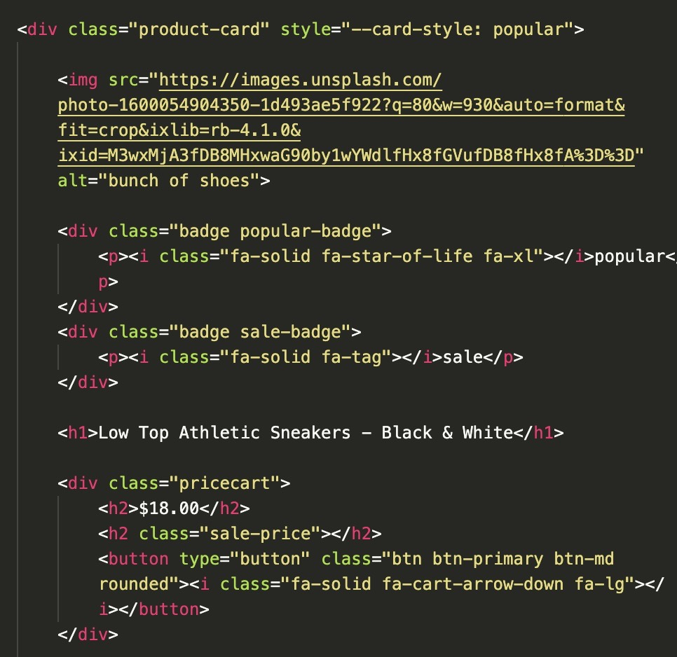
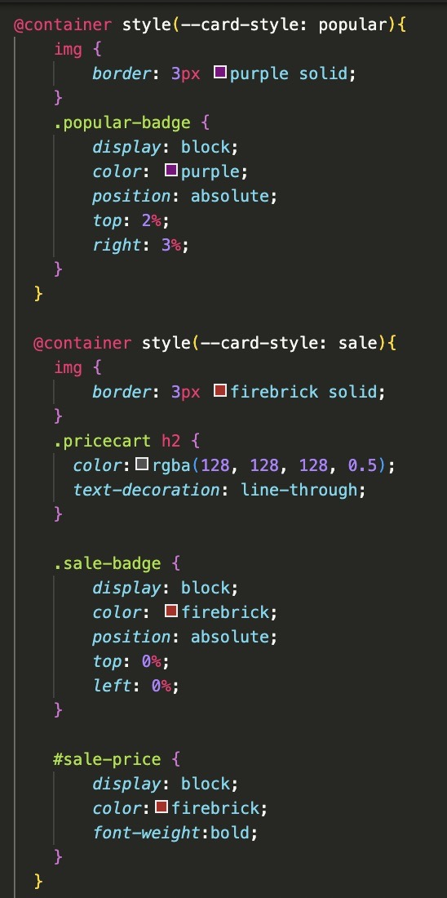

let's explore further how style queries can be useful
in this example, we will be using one of the most common uses of style queries: product cards. this is a great way to show the capabilities of customization within repeating card types

popular
sale
Athletic Sweatpants - Women
$32.00
$22.99

popular
sale
Low Top Athletic Sneakers - Black & White
$18.00

popular
sale
Blue Button Down Shirt
$64.00
*Include all possible elements inside the card’s HTML, such as a sale badge, a popularity icon, and the sale price. Make sure these elements are hidden by default using CSS so that they do not appear on every card.
*Each card is then set as a style container using ‘container-type: style’, and a custom variable like ‘--card-style' is applied to indicate the card’s context. Style queries can then detect this variable and selectively reveal or modify elements within the card.
With this, the card components can adapt its appearance automatically based on the style context it is placed in, demonstrating how style queries help create flexible and reusable UI components with just a few lines of code!!


